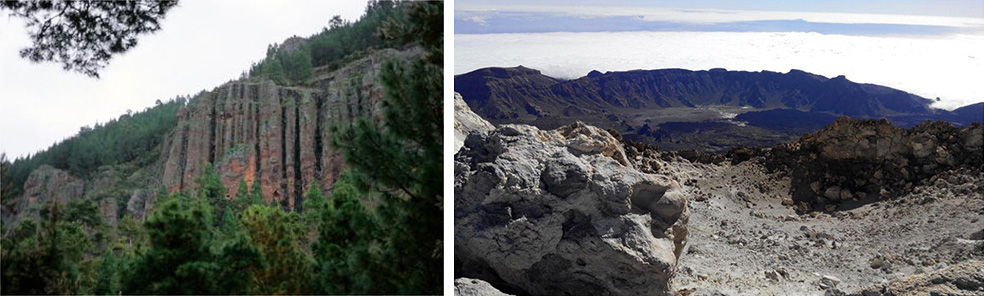
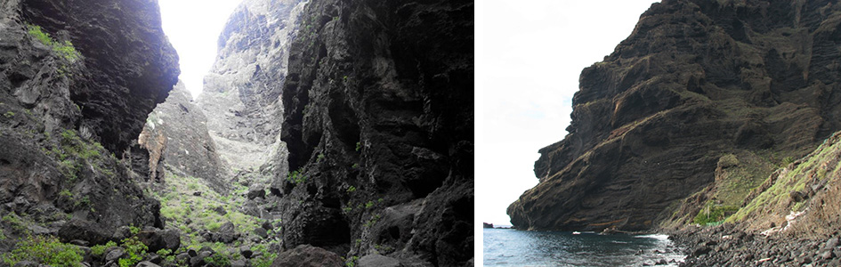
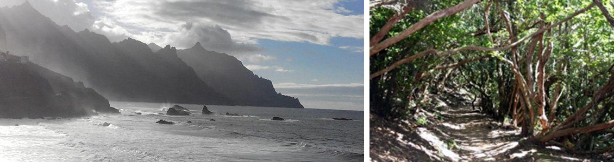

Тенерифе словно создан для любителей пешеходного туризма - ведь недаром его называют «континентом в миниатюре», здесь, на небольшом пространстве представлены несколько климатических и природных зон, от тропиков и засушливых пустынь до порой заснеженного Пика Теиде. За короткий отрезок времени можно побывать и в реликтовых лавровых лесах, и увидеть фантастические «лунные» пейзажи, и покорить самую высокую гору Испании - вулкан пик Теиде. Относительно небольшие размеры острова позволяют ночевать в одном месте на берегу океана и каждый день отправляться в походы в совершенно разные ландшафты - машина забирает нас из отеля утром и привозит вечером
Маршрут, хоть относительно короткий и простой, но большой красоты, хотя бы потому что проходит по тропе Оргáнов (имеется в виду музыкальный инструмент , а не медицинский термин) по вершинам скал, напоминающих трубы органа в церкви. Для любителей трекинга этот маршрут словно Мекка для мусульман - нельзя покинуть этот мир, не пройдя по нему и не насладившись его красотой. Впрочем, не стоит покидать этот мир и после этого маршрута, ведь их еще много впереди!
Расположенная на высоте 1000 метров над уровнем моря, долина Оротава разительно отличается от того что мы видели внизу - рощи канарской сосны освежают воздух, делают его прозрачным, участки закрытые лесом сменяются открытыми просторами, подъемы сменяются спусками … сказочный лес, сказочные виды.
Вершина острова, пик Теиде, является самым высоким пиком Испании - 3718 м. Давным-давно, высота горы была еще больше - ученые говорят о 7 км высоты - однако, после мощного извержения, его высота уменьшилась, нынешний пик Теиде окружает кратер этого, когда то огромного вулкана. Тем не менее, Теиде не потух до конца, и является действующим вулканом, последнее извержение произошло в 1909 году. Мы поднимемся по канатной дороге к смотровой площадке на высоте 3500 метров, откуда, если позволит погода, поднимемся к самому пику. То, что вулкан действующий, можно убедиться воочию - из отверстий в земле клубится пар и пахнет серой. Отсюда, выше облаков, можно другие острова Канарского архипелага - La Gomera, La Palma, Gran Canaria.
Далее, по черным лавовым полям, мы спустимся к другому пику - Пико Вьехо, “дочернему” вулкану Тейде. Снимки, сделанные отсюда, очень похожи на сделанные марсоходом Curiosity. Недаром именно здесь проводились его испытания.
На Тенерифе есть не только марсианские, но и лунные пейзажи, причем есть “черный лунный пейзаж” и “белый лунный пейзаж“. Чёрный представляет собой пустыню из черного вулканического пепла, дюны черного песка, из которых кое-где обнажаются так называемые “ платформы”. Белый лунный пейзаж - своеобразные песчаные формы, результат эрозии и выветривания вулканического пуфа. В этот день мы увидим обе эти формы рельефа.
Пожалуй, один из самых зрелищных маршрутов на Канарских островах, спуск по каньону Маски, является обязательным для посещения на Тенерифе. Расположенная на высоте 600м деревня Маска служит отправной точкой, от нее по руслу реки, петляя по ее берегам, а где-то и прямо по реке, в окружении отвесных стен, уходящих в небо, мы спустимся к уединенному пляжу, где можно освежиться в водах Атлантического океана. Когда-то это место служило прибежищем пиратов, грабивших проплывающие мимо корабли. Действительно, глядя на эти места, можно предположить, что где- то здесь спрятаны сокровища Флинта или Моргана. С пляжа нас заберет кораблик, конечно не пиратский, и можно будет полюбоваться высокими уходящими в океан обрывами скал, а если повезет, то и дельфинами.
На северо-востоке острова находится природный парк Анага - территория, покрытая уникальными реликтовыми лавровыми лесами, по которым ходили еще динозавры. В третичном периоде такие леса были типичны для южной Европы, но с изменением климата они исчезли и сохранились только здесь, в горах на высоте 500-1400м. Причудливо сплетенные стволы образуют естественные коридоры, по которым проходит тропа. Отроги гор образуют острые хребты, с которых открываются великолепные виды.
В деревне Чинамада можно посетить ресторан, расположенный прямо в пещере и отведать традиционную канарскую пищу. Кстати, многие канарцы до сих пор предпочитают жить в пещерах, хоть и оборудованных по-современному. До недавнего времени ко многим деревням здесь не было дорог - добраться до дому можно было только по одной из троп, по которым ходили еще гуанчи - исконные жители Канарских островов.
Мы продолжим путешествие по реликтовому лесу, на этот раз, отправившись на самую оконечность полуострова Анага, к скалам Бермеха. В пути нам встретятся различные эндемичные растения, среди них – драконовое дерево, древовидный зверобой, вереск. Если в лавровом лесу влажно и прохладно, то на открытых местах - засушливо, преобладают суккуленты- кактусы, канарская полынь. Дойдя до маяка Анага, мы спустимся в бухту, отсюда видны скалы Роке де Тьерра и Роке де Фуера.